WWDC25 SwiftUIの新機能のまとめ
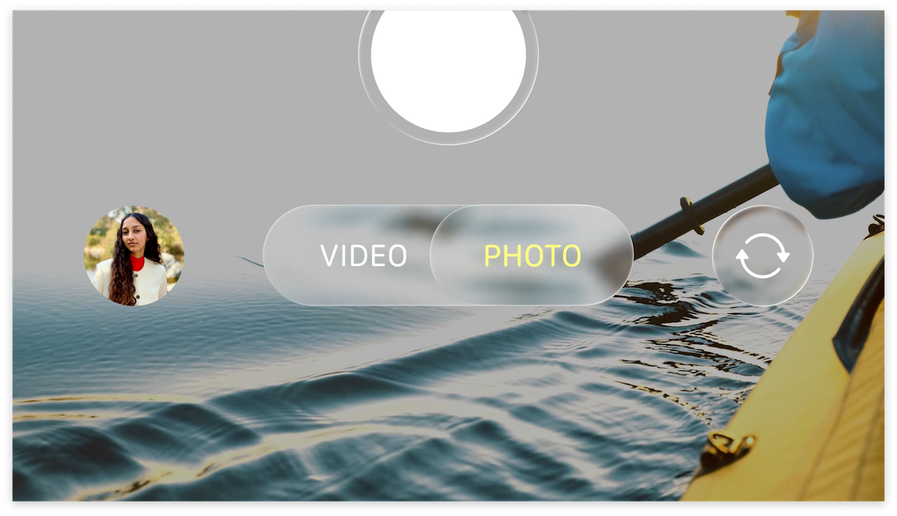
WWDC25のセッション SwiftUIの新機能 で紹介されたSwiftUI新機能をカテゴリごとにまとめます。 昨年のWWDC24のSwiftUIの新機能から引き続き盛りだくさんなアップデートですね！
Liquid Glassデザインの適用
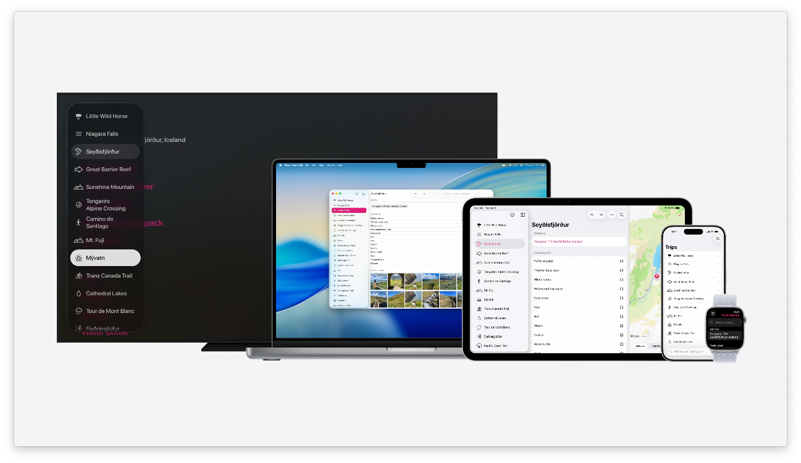
アプリを新しいXcode（SDK）でリビルドするだけで、全プラットフォームでLiquid Glassデザインが適用されます。
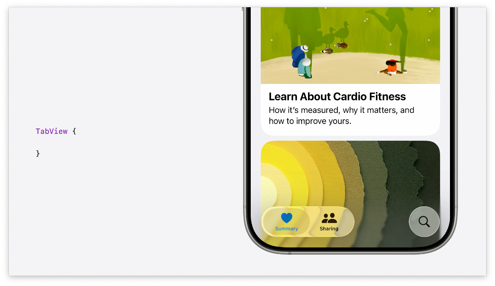
例えば、ナビゲーションコンテナが一新され、タブバーやツールバーもコンパクトな新スタイルに変更されました。これらはナビゲーション遷移時にアイテムがなめらかにモーフィング（形状変化）します。 iPadOSやmacOSのサイドバーも半透明のガラスのようなデザインになり、背後のコンテンツが映り込むようになりました。 もちろんトグル、セグメントコントロール、スライダーなど標準UIコントロールもデザイン刷新され、プラットフォーム全体で統一感のあるモダンな見た目になっています。
ToolbarSpacer
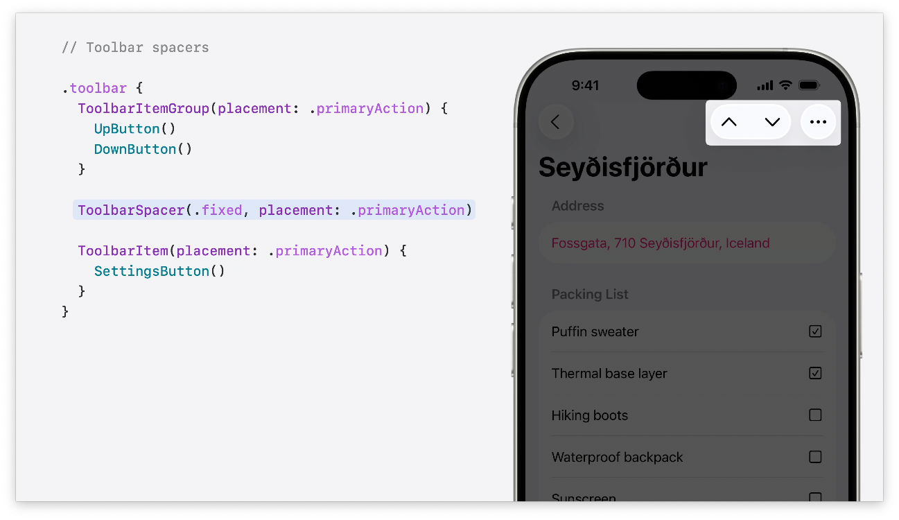
ToolbarSpacerを使用することで、ツールバー項目のセクション分けを調整できるようになりました。
このサンプルでは、上下の矢印ボタンのグループと、設定ボタンの間に固定スペーサを配置して分離しています。
.toolbar {
ToolbarItemGroup(placement: .primaryAction) {
UpButton()
DownButton()
}
ToolbarSpacer(.fixed, placement: .primaryAction)
ToolbarItem(placement: .primaryAction) {
SettingsButton()
}
}
Liquid Glassへの着色
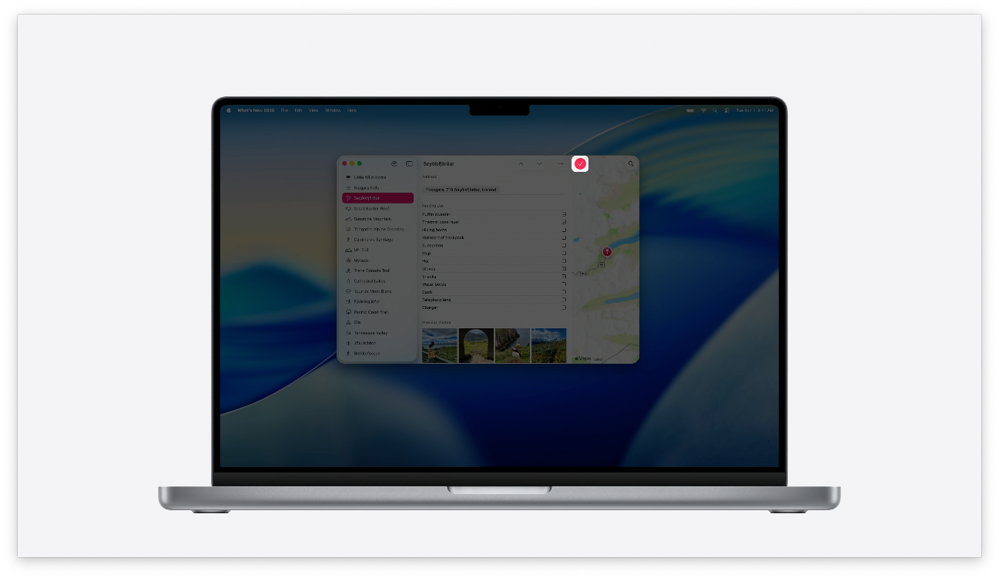
ツールバーの特定のボタンを目立たせたいなど、必要ならLiquid Glass UIにtintで着色できます。
.toolbar {
ToolbarItem(placement: .primaryAction) {
SaveLocationButton()
.buttonStyle(.borderedProminent)
.tint(.pink)
}
}
カスタムビューにもこの新デザインを取り入れることが可能です。SwiftUIに新登場したビュー修飾子.glassEffect()を使うと、任意のビューに周囲の背景を映し込むガラス風のブラー効果を適用できます。例えば次のようにボタンにglassEffect()を付与すれば、背後が透けるスタイリッシュなボタンになります。
Button("To Top", systemImage: "chevron.up") {
// 上にスクロールする処理
}
.padding()
.glassEffect()
Searchableの刷新
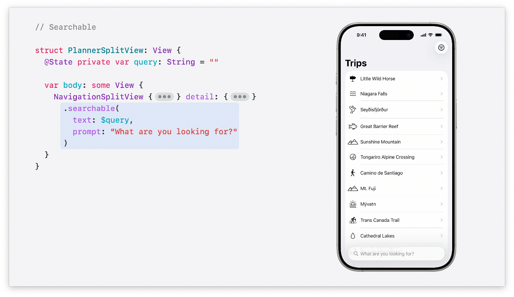 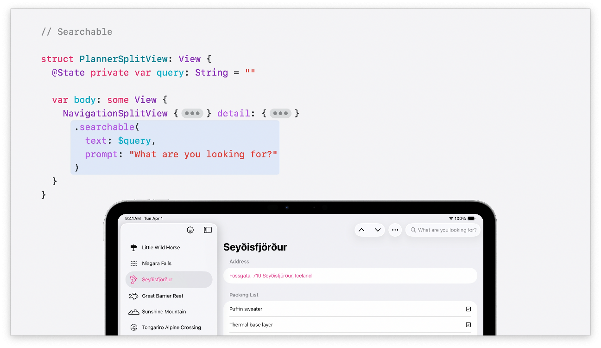
.searchableによる検索UIは、iPhoneでは画面下部に表示されるよう変更されました。一方、iPadやmacOSでは画面右上に表示されるなど、プラットフォームに応じて適切な場所に表示されます。
NavigationSplitView {
Text("Sidebar")
} detail: {
Text("Detail")
}
.searchable(
text: $query,
prompt: "What are you looking for?"
)
Tab(role: .search)
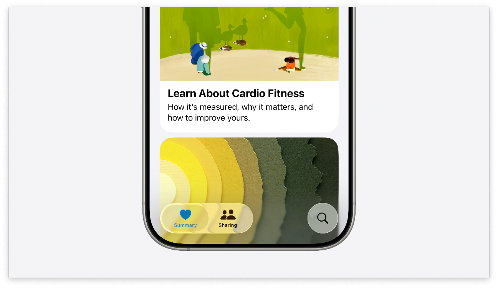 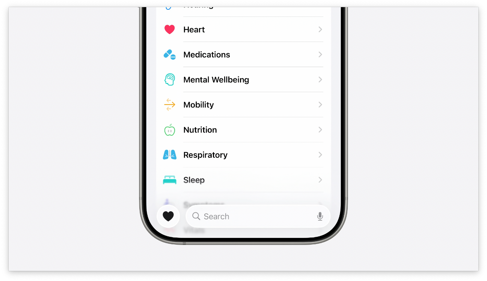
タブバーに検索UIを含むこともできるようになりました。
TabViewの要素としてTab(role: .saerch)を加えるだけです。
この検索タブを選択すると、タブバーがモーフィングして検索フィールドに変化します。
TabView {
Tab("Summary", systemImage: "heart") {
NavigationStack {
Text("Summary")
}
}
Tab("Sharing", systemImage: "person.2") {
NavigationStack {
Text("Sharing")
}
}
Tab(role: .search) {
NavigationStack {
Text("Search")
}
}
}
.searchable(text: $text)
カスタムビューもLiquid Glassに
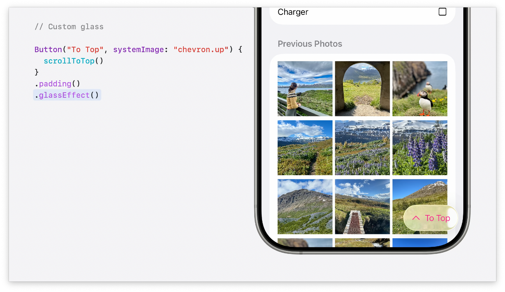
glassEffectモディファイアにより、カスタムビューにもLiquid Glassを適用できます。
Button("To Top", systemImage: "chevron.up") {
scrollToTop()
}
.padding()
.glassEffect()
iPadのメニューバー対応
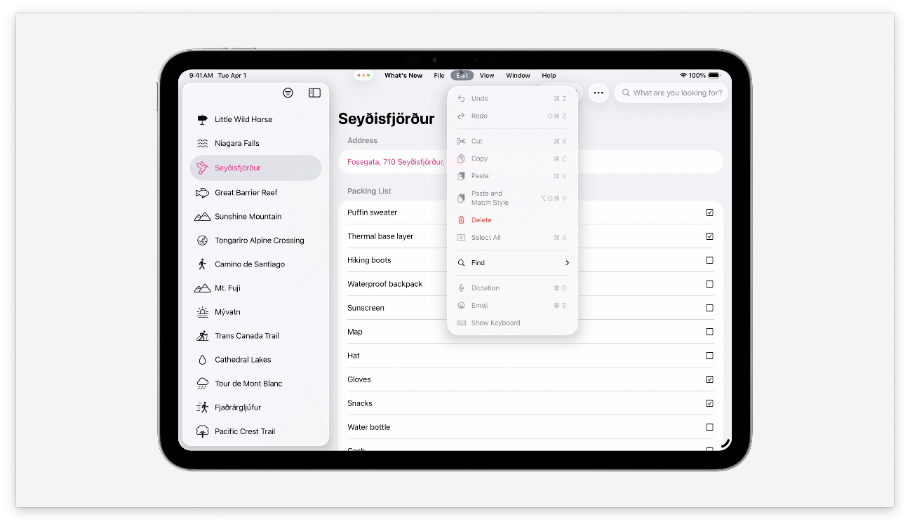
これまでmacOSアプリにメニューバーを表示するために使われていたcommandsモディファイアがiPadOSでも使えるようになりました。
WindowGroup {
RootView()
}
.commands {
TextEditingCommands()
}
iPadのマルチウィンドウ対応
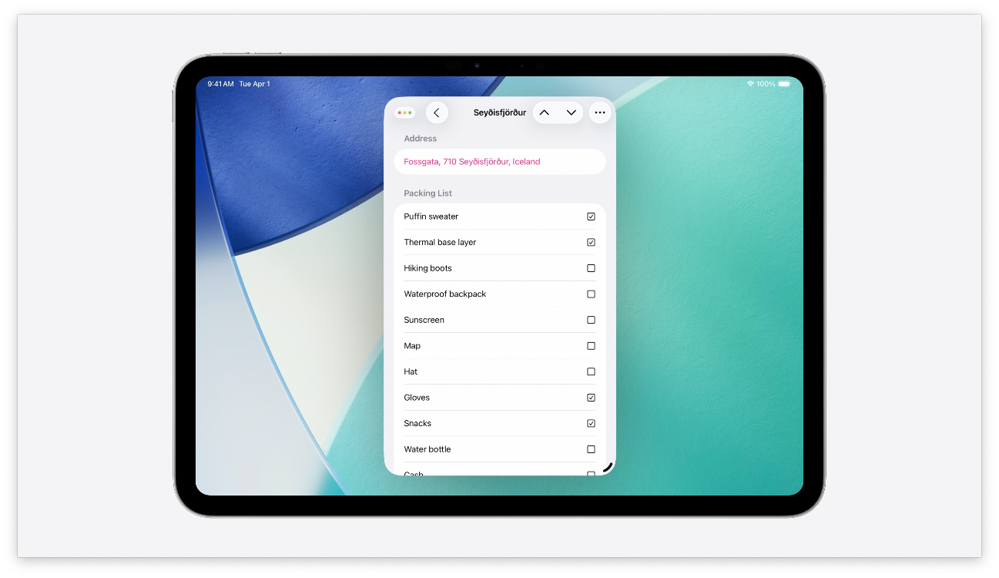
iPadOSがマルチウィンドウに対応しました。これに伴いiPadOS用アプリのウィンドウが自由にリサイズできるようになります。
開発者目線では対応負荷は高いですが、たとえば標準のSplit Viewを使っていればウィンドウサイズに応じて自動でレイアウトが変わるなどのサポートを受けられます。
windowResizeAnchor
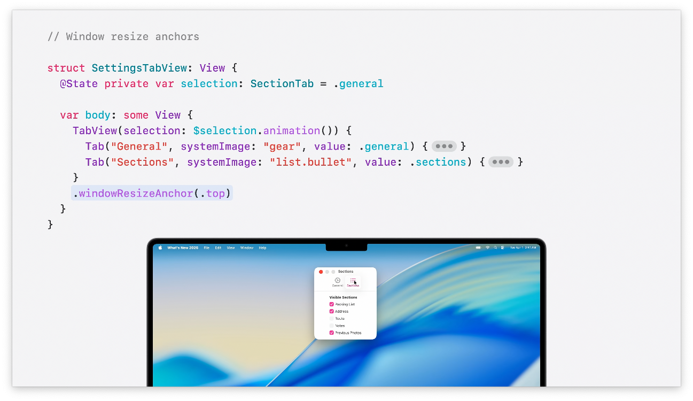
macOSではウィンドウリサイズ時のアニメーションのアンカーポイント（どこが固定されるか）を指定して調整することができるようになりました。 このサンプルでは上部が固定さう、リサイズに伴い下部が伸縮するようになります。
TabView(selection: $selection.animation()) {
Tab("General", systemImage: "gear", value: .general) { Text("一般") }
Tab("Sections", systemImage: "list.bullet", value: .sections) { Text("セクション") }
}
.windowResizeAnchor(.top)
パフォーマンスの大幅向上
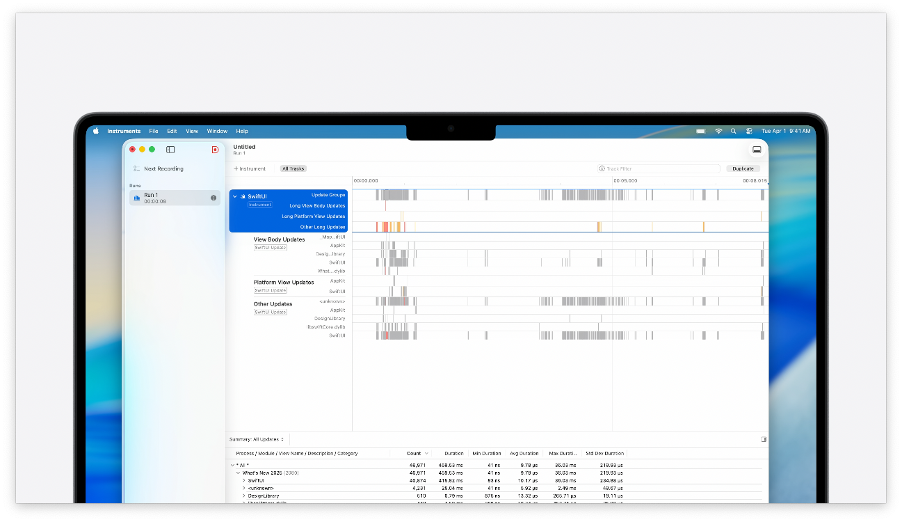
パフォーマンス改善にも注力されたとのことです。特に、大量のデータをリストで扱う際のパフォーマンスが22倍速くなるケースもあるとのこと。
スクロール処理も改善され、高速スクロール時のフレーム落ちが起きにくくなりました。
また、SwiftUIのアプリのパフォーマンスを改善するための診断ツールもInstrumentsに追加されました。これによりSwiftUIのビューの更新やレイアウト処理のボトルネックを視覚的に捉えやすくなります。
Swift Concurrency
Swift Concurrencyについては以下のセッションビデオがあります。
Animatableマクロ
Animatableマクロにより、従来は自分で書かなければならなかったコードを削減できます。
たとえば、１つのプロパティをアニメーション対象から除外したい場合、@AnimatableIgnoredをつけるだけです。
@Animatable
struct LoadingArc: Shape {
var center: CGPoint
var radius: CGFloat
var startAngle: Angle
var endAngle: Angle
@AnimatableIgnored var drawPathClockwise: Bool
func path(in rect: CGRect) -> Path {
// Creates a `Path` arc using properties
return Path()
}
}
3次元レイアウト
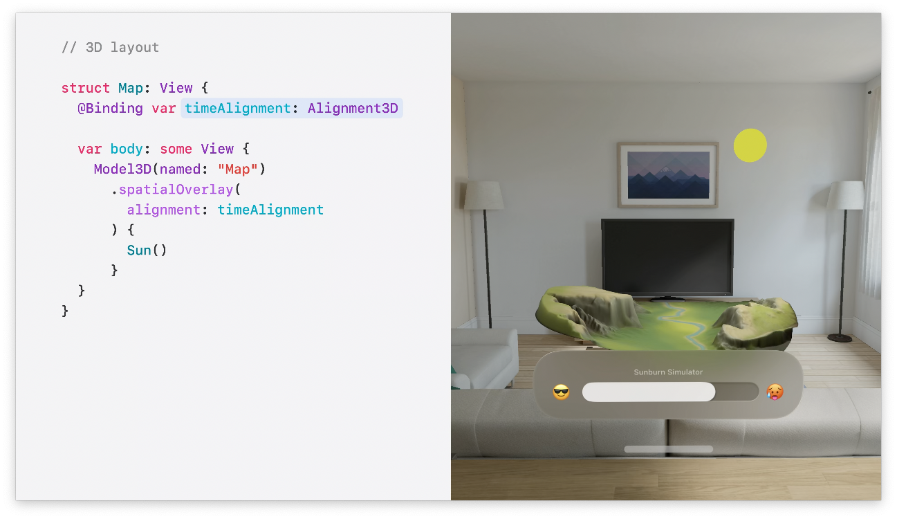
visionOSにAlignment3DやspatialOverlayが加わり、立体的なレイアウトがより簡単になります。
@Binding var timeAlignment: Alignment3D
var body: some View {
Model3D(named: "Map")
.spatialOverlay(
alignment: timeAlignment
) {
Sun()
}
}
manipulable
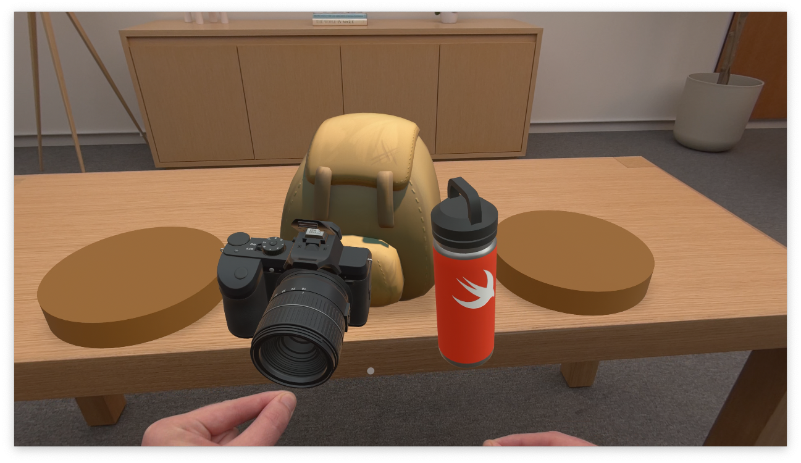
visionOSではSwiftUIとRealityKitの連携も強化されています。
maniputableモディファイアで3Dモデルをユーザーが掴んで移動できるようになります。
また、SurfaceSnappingInfoを監視することで、モデルが置かれている現実世界の面（机や壁など）を知ることもできます。
@Environment(\.surfaceSnappingInfo) var snappingInfo: SurfaceSnappingInfo
var body: some View {
VStackLayout().depthAlignment(.center) {
waterBottleView
.manipulable()
Pedestal()
.opacity(snappingInfo.classification == .table ? 1.0 : 0.0)
}
}
visionOSのウィンドウ、ボリューム、シーン
その他、visionOSではウィンドウの復元ができるようになったり、新しいシーンタイプが加えられました。
Scene bridging
Scene bredging APIにより、UIKitアプリやAppKitアプリとSwiftUIのシーンが相互運用できるようになります。 それにより例えば、VolumeやImmersive Spaceを直接UIKitアプリで直接扱えるようにもなります。
Remote Immersive Space
RemoteImmersiveSpaceにより、visionOS用のImmersive SpaceをmacOS上でレンダリングしてプレビューできるようになりました。 Vision Proシミュレータのようなものをサードパーティアプリでも再現できるイメージかと思います。
Assistive Access
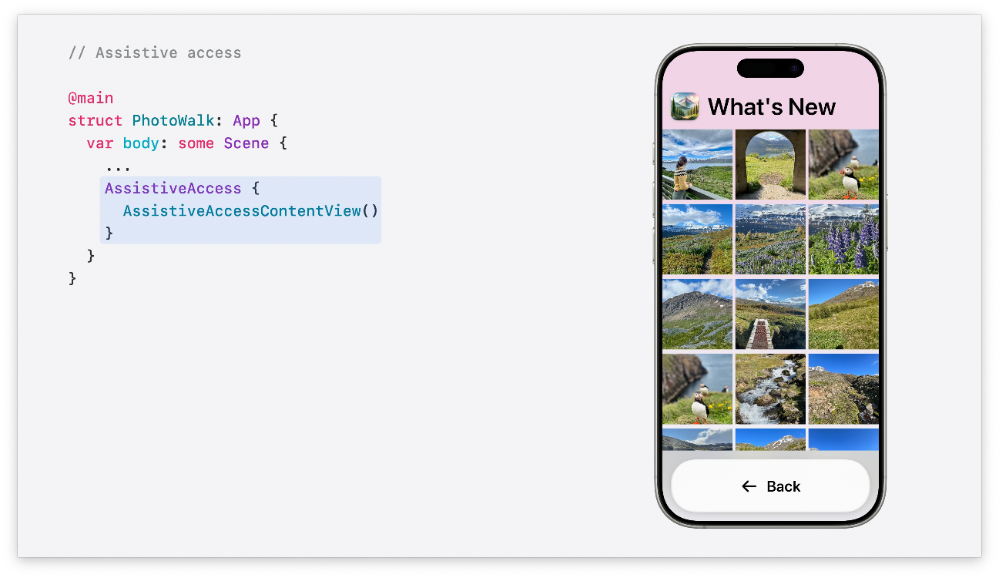
@main
struct PhotoWalk: App {
var body: some Scene {
WindowGroup {
ContentView()
}
AssistiveAccess {
AssistiveAccessContentView()
}
}
}
認知障害のあるユーザー向けのViewを表示するためのAssistiveAccessも追加されました。
AppKit連携強化
NSWindowからSwiftUIのViewを含むシートを表示できるNSGestureRecognizerRepresentableでAppKitのジェスチャーをSwiftUIにブリッジできる- Interface BuilderでNSHostingViewを使用できる
RealityKit連携強化
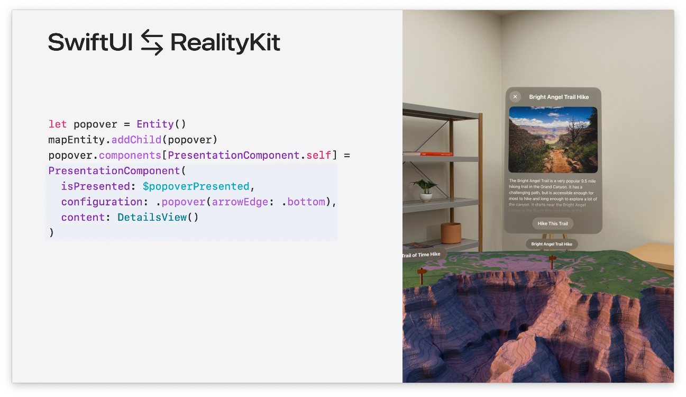
- RealityKitエンティティが
Observableに - Coordinate Conversion APIの強化
- RealityKitのエンティティからSwiftUIを直接ポップオーバー表示
- アタッチメントコンポーネント
- アニメーションの同期
- コンポーネントへのバインド
- RealityVieのサイズ関連の動作が新しく
RealityView { c in
let mapEntity = Entity()
let popover = Entity()
mapEntity.addChild(popover)
popover.components[PresentationComponent.self] = PresentationComponent(
isPresented: $popoverPresented,
configuration: .popover(arrowEdge: .bottom),
content: DetailsView()
)
}
watchOSとmacOSのカスタムコントロールサポート
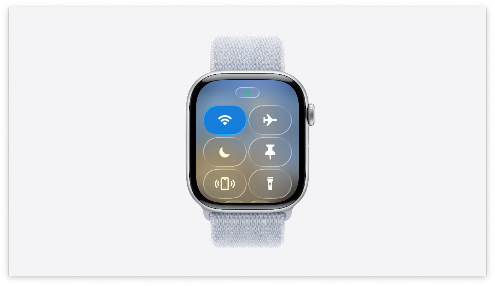
iOS/iPadOSがサポートしていたコントロールセンターのカスタムコントロールをwatchOSとmacOSもサポートしました。
visionOSとCarPlayのWidgetサポート
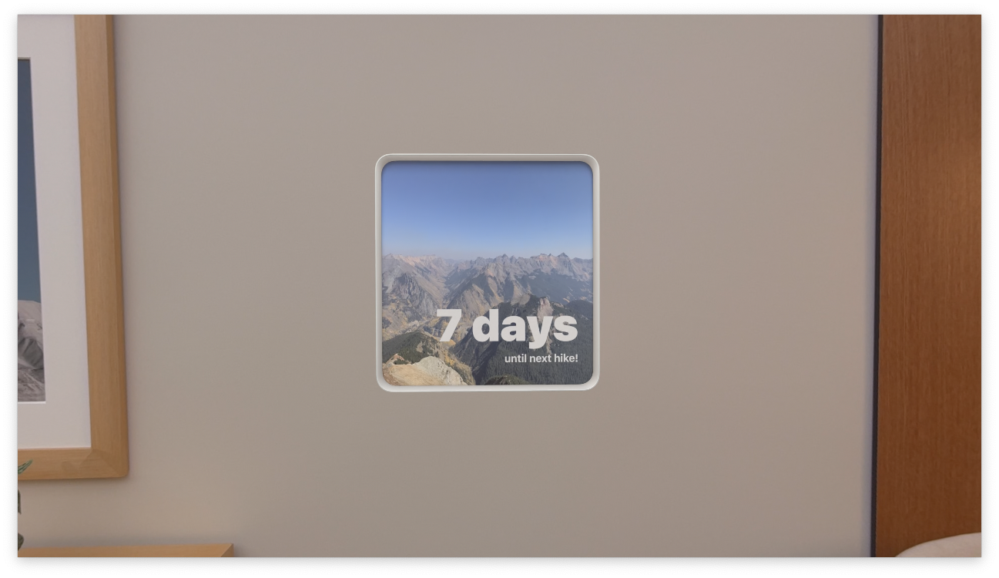
visionOSとCarPlayもWidgetをサポートしました。
また、Widgetをどの程度の詳細さで表示するかの指示もOSから受けられるようになりました。
具体的には、visionOSでユーザーがWidgetから遠い位置にいるとsimplifiedレベルになり、他のOSでは常にdefaultレベルになるとのことです。
import SwiftUI
import WidgetKit
struct PhotoCountdownView: View {
@Environment(\.levelOfDetail) var levelOfDetail: LevelOfDetail
var body: some View {
switch levelOfDetail {
case .default:
RecentPhotosView()
case .simplified:
CountdownView()
default:
Text("Unknown level of detail")
}
}
}
その他、以下のアップデートもあります。
- CarPlayのライブアクティビティサポート
- プッシュベースの更新
- watchOSでの関連性の新API
WebView
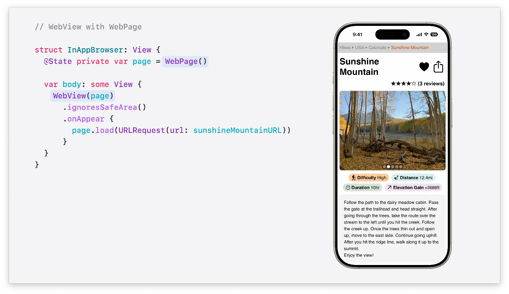
SwiftUIにWebViewが追加されました（これまではUIKitのWebViewを埋め込んで利用する必要がありました）。
ObservableなWebPageオブジェクトを使用することで、ページの読み込み状態やタイトル、URLなどを監視できます。
また、ページ遷移やリロードもコードから制御可能です。
import SwiftUI
import WebKit
struct InAppBrowser: View {
@State private var page = WebPage()
var body: some View {
WebView(page)
.ignoresSafeArea()
.onAppear {
page.load(URLRequest(url: sunshineMountainURL))
}
}
var sunshineMountainURL: URL {
URL(string: "sunshineMountainURL")!
}
}
SwiftUIのWebViewは以下の機能にも対応しています：
- カスタムUser-Agentの設定
- JavaScriptの実行
- カスタムURLスキームのハンドリング
3Dチャート
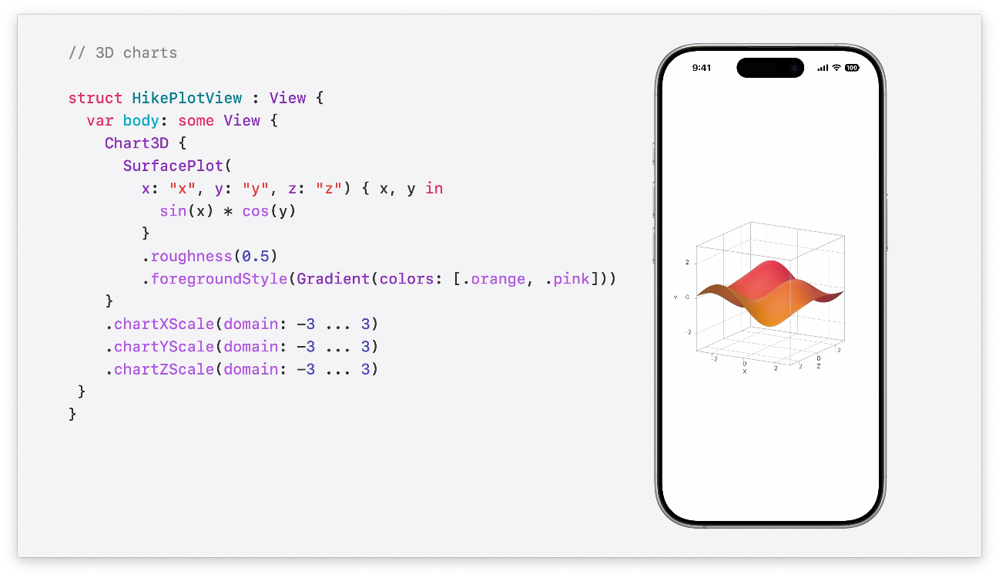
Swift Chartsが3Dをサポートしました。
Chart3D {
SurfacePlot(
x: "x", y: "y", z: "z") { x, y in
sin(x) * cos(y)
}
.foregroundStyle(Gradient(colors: [.orange, .pink]))
}
.chartXScale(domain: -3 ... 3)
.chartYScale(domain: -3 ... 3)
.chartZScale(domain: -3 ... 3)
ドラッグ＆ドロップの強化
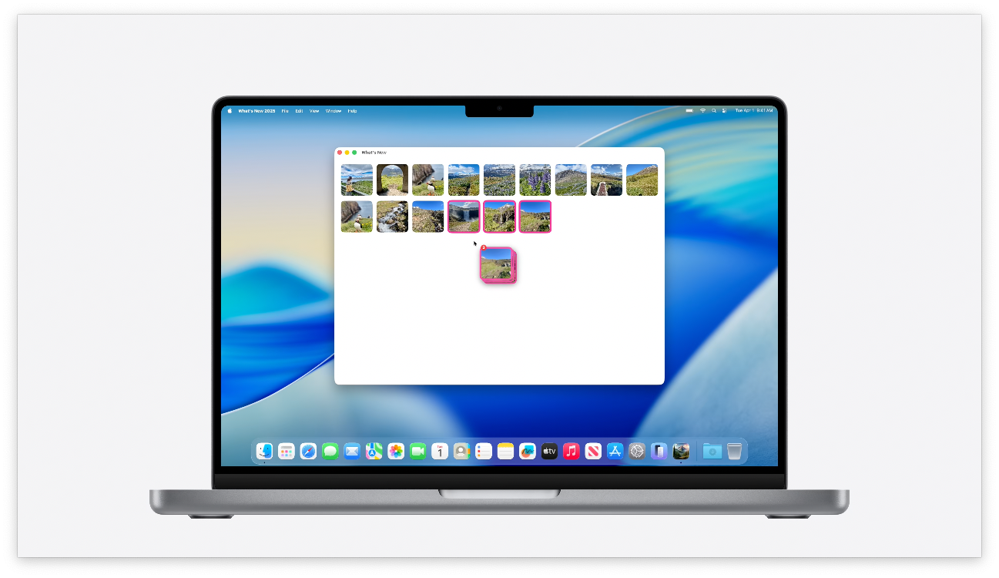
新しいdraggableとdragContainerを使うことで複数の項目を同時にドラッグできるようになりました。
dragConfigurationでドラッグ操作をカスタマイズともできます。
ドラッグ中の見た目を変えるためのdragPreviewsFormationも加わりました。
import SwiftUI
struct DragDropExample: View {
@State private var selectedPhotos: [Photo.ID] = []
var body: some View {
ScrollView {
LazyVGrid(columns: gridColumns) {
ForEach(model.photos) { photo in
view(photo: photo)
.draggable(containerItemID: photo.id)
}
}
}
.dragContainer(for: Photo.self, selection: selectedPhotos) { draggedIDs in
photos(ids: draggedIDs)
}
.dragConfiguration(DragConfiguration(allowMove: false, allowDelete: true))
.onDragSessionUpdated { session in
let ids = session.draggedItemIDs(for: Photo.ID.self)
if session.phase == .ended(.delete) {
trash(ids)
deletePhotos(ids)
}
}
.dragPreviewsFormation(.stack)
}
}
リッチテキスト
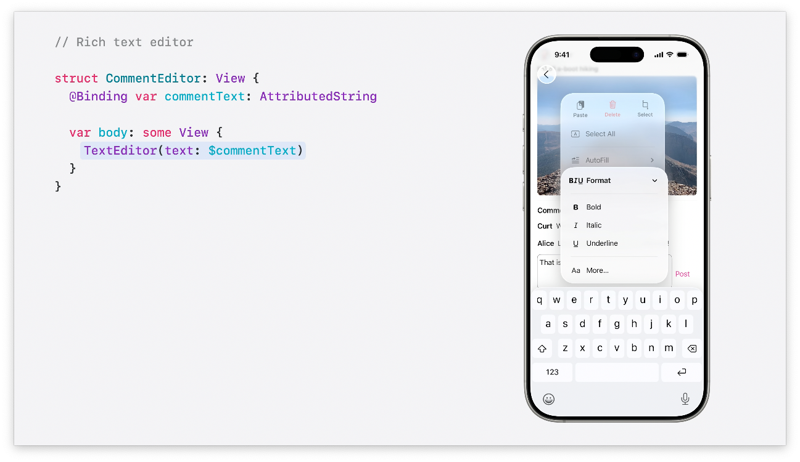
TextEditorにAttributedStringを渡すことで、太字、イタリック、色の変更などの装飾をサポートしたリッチテキストが扱えるようになりました。
しかも書式設定用のツールバーも標準で用意されていますのでリッチテキストエディターが簡単に実現できます。
struct CommentEditor: View {
@Binding var commentText: AttributedString
var body: some View {
TextEditor(text: $commentText)
}
}
まとめ
今年も昨年に引き続き盛りだくさんなアップデートでした。 このまとめをするのにだいぶ時間を食うため迷いましたが、WWDC24のまとめも結果として自分で何度も見返す1ことになったため、今年もがんばってまとめました。
直近ではアップデート内容のキャッチアップ、1年後2年後にはこれらのAPIを実際に使えるようになったときのインデックスとして利用できれば幸いです。
-
このまとめの存在を忘れていたのに新APIについてGoogle検索をするとなぜか自分のまとめに行き着いたり ↩︎
![[WWDC24] SwiftUIの新機能のまとめ](/images/wwdc24-whats-new-in-swiftui/top.jpg)


![[visionOSアプリ練習] SwiftUIアプリで3Dモデルを表示する](/images/visionos-volume-3dmodel/top.png)